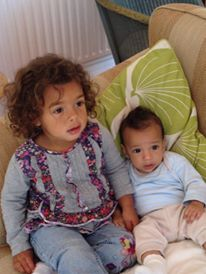
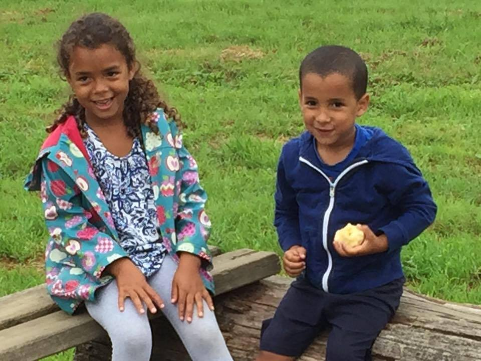
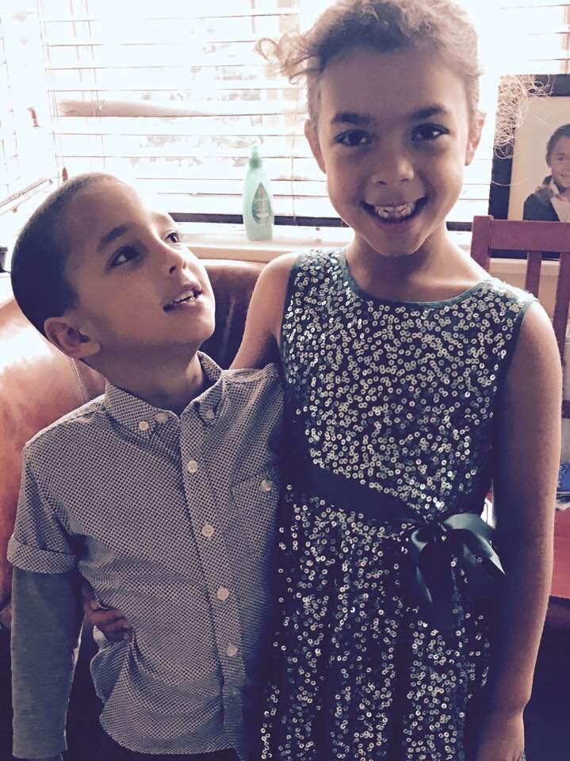

Having been absolutely convinced we were having a boy, Olivias arrival was a huge surprise. She was 2 days early and came into the world angry, crying before she had even been fully delivered! Her first year is a blur. My main memory of her as a baby is crying. She was not a happy baby! However as she got older and learned to walk and talk her frustration subsided and a very funny, opinionated and bright girl emerged!
When Oivia was 18 months old I fell pregnany with her brother Zach. Olivia was and is a fantastic big sister and has always loved her siblings with all her heasrt. From the minute Zachary came home Olivia helped taking care of him and they have grown up to be very close. At 7 yrs old she even sleeps in his bed every night as he is scared of the dark!
  